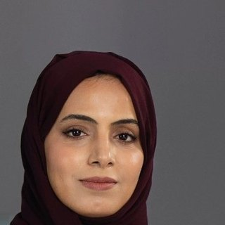

بدر العلوي
كاتب رأي
 العدد ١٢
العدد ١٢أصواتٌ شابة تكتب عن الأثر، وتروي ما وراء الإنجاز.
قلم العدد
كاتب رأي · مقالان
«الإنجاز لا يكتمل بلحظة التتويج، بل حين يفتح باباً لمن يأتي بعده.»اقرأ مقاله الأخير
كل الأقلامكاتب رأي
كاتبة وصحفية ثقافية
باحثة في الابتكار
كاتب رياضي
كاتبة قصص ملهمة
كاتب ثقافي
مهتم بريادة الأعمال العلمية

كاتبة ومربية